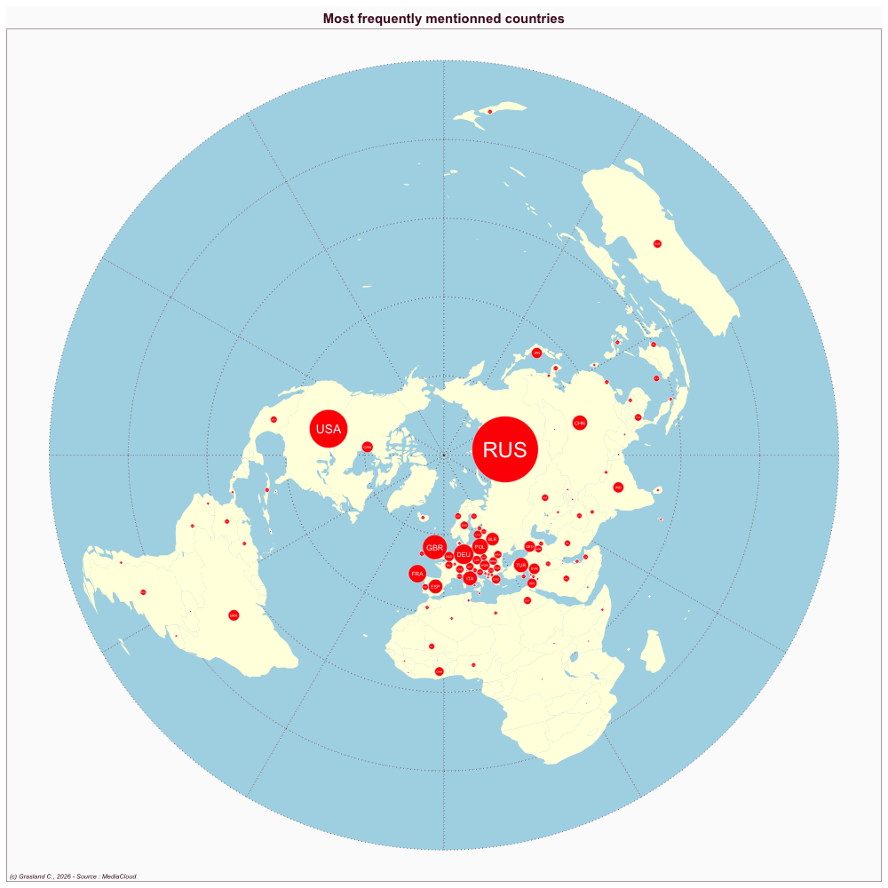

Ukraine
- Website : Fakty i Kommentarii
Scale
- Global
- National
Topics
- General news
- Political news
- Economic news
Publications
Szostek J. 2014. Russia and the news media in ukraine: A case of “soft power”? East European Politics and Societies 28: 463–486